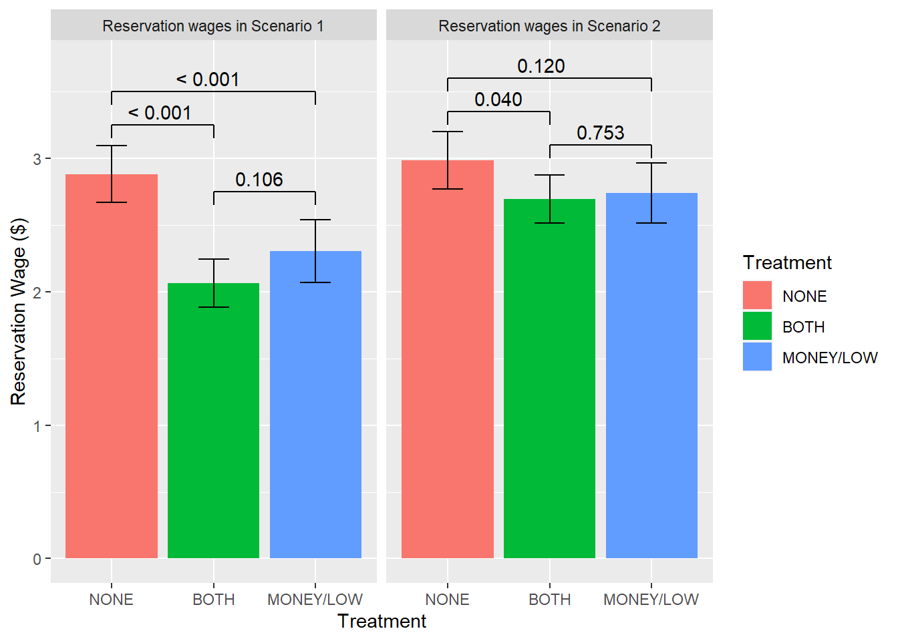

is_consistent <- function(wta0, wta1) {
wta0 <= wta1
}
df5b <- df4
for (i in 1:15) {
col_name <- paste0("consistent", i)
df5b[[col_name]] <- is_consistent(df4[[paste0("wta", i)]], df4[[paste0("wta", i + 1)]])
}
consistent_cols <- colnames(df5b)[startsWith(colnames(df5b), "consistent")]
df5b[[col_name]] <- ifelse(is.na(df5b[[col_name]]), NA, as.logical(df5b[[col_name]]))Data Report 4
Use of outside sources
I used the following outside sources for this:
For every line of code that I copied from some outside source, I commented it appropriately in the code:
- For single lines of code, or code related to theming plots/tables, I simply added a comment stating the source.
- For larger chunks of code, I added one line, highlighting the start and end, with a brief statement whether I copy-pasted it directly or edited it further.
- In addition, I provided a score for how well I (subjectively feel I) understand the code I used from 1 (“I do not understand it at all”) to 5 (“I understand fully”). - 5
The scoring and potential point reductions remain as in DR2 and DR3.
Dataset
Source: Replication code from an experiment by Fallucchi and Kaufmann for their paper on Narrow Bracketing.
Documentation:
The information within the dataset refers to the following variables, for which more information can be found here. Roughly, there are columns referring to characteristics such as:
demographics,
the treatment (from 1 to 6: “both”, “money/low”, “none”, “money”, “before”, “after”),
session date and participant number,
chosen option and chosen payment.
Cleaning
According to clean-data.r, each step of cleaning is given a different number. For example, the first part of the cleaning corresponds to df1. The raw data is cleaned in the following way (I will go step-by-step and sometimes offer thoughts/suggestions):
Drop variables with no information (i.e. constant value). This is done through creating a function that returns TRUE if the length is equal to one. Then, the function is used at the end of a pipe to subset those columns returning TRUE – this is saved in object
colnames_to_discard, which is subsequently filtered out of the new dataframedf1.- Improvement on transparency: explain why, in creating
colnames_to_discard, the columns with prefix “wta” of suffix “incons” were filtered out.
- Improvement on transparency: explain why, in creating
Replace playerNr by unique pid (
rownumber()), keep treatment information. In actuality, the code creates a new columnpidthat contains numbers for every row (or participant), but does not removeplayerNrto “compare with raw data”. Save asdf2.- Improvement on transparency: unclear what is the point of keeping playerNr then. Otherwise clean code.
Document variable names. Here, column
scenariois renamed asscenariochosen, and this is saved in objectdf3. Otherwise this is virtually identical to the previous data frame.Improvement on accessibility: I would argue that the documentation that appears after the hashtags should be put in a documentation file, as it is counter-intuitive to search the explanation of every column in the cleaning file.
Unnecessary renaming (does not improve the understanding).
Collect rows by scenario. First, a function is made to end in _1 for scenario 1 and _2 for scenario two. Then, the names are standardized and data is pivoted on a long format (tidy data), and it is saved in
df4.- Very good explanation in the code.
Identify inconsistent choices by scenarios. The function
is_consistentis created to return 0 if the first argument is less than or equal to second parameter, otherwise 1. This function is used to create columns checking consistency, and then those columns’ values are turned into logical arguments. Lastly, if by the last column (consistent15) there is a NA or vector consistent15 is equal to the result of zero an error is made.Improvement on iterations: columns consistent 1 - 15 could have been made as a loop, otherwise I think it was quite annoying to do every line manually. Also, if the
is_consistentfunction was not an ifelse, it would have returned a logical argument without the mutation creating df5 (line 126-127).The relevance of stopifnot() is a little confusing, even though it does the job (of letting an error if the conditions are not true). This part could have been removed in the final code, however.
Get unique switching point for consistent choices by scenario x pid, or get the lowest switching point, and number of inconsistent choices per person per scenario. For this, the data was reshaped into a longer format, then grouped by
pidandscenarioand the number of inconsistent choices were summed up. The second switching point was set to 17 if they never chose higher work option. Then, the previous data frame was joined with these changes, and saved indf6.Compute reservation wages from switching points and treatments/scenarios. The switching point was multiplied by 0.25 ($) to calculate the reservation wage for each participant and unnecessary columns were dropped.
Recoding treatment and gender. For treatment, treatments 1,2,3 were recoded as “narrow”, “low” and “broad” if before 1 March 2020; treatments 4 and bigger as “partial” if before 1 March; treatments 1 and 2 as “before” and “after”, respectively, if after 1 March. In regards to gender, 1 was changed to “male”, 2 to “female”, 3 to “other”.
- I would have personally used ifelse() instead of case_when() because the function is much more known and straightforward, but would have led to essentially the same thing
Save smaller dataset for direct analysis
!! In the explanation of cleaning the dataset there are 8 steps, but in reality there are 9 (missing step 8).
Now, moving forward to some applied changes.
For df4 -> df5, I will suggest a less repetitive way of doing the same code. For illustration reasons, I will provide my modified code below. The logic behind this code was to create a loop checking for consistency for each of the 15 wta’s, instead of doing it manually. Additionally, I used more intuitive functions (such ascolnames()andifelse()) and made it so that the is_consistent function automatically returns a logical argument, instead of having to do that later (as in the original code).
It is important to check, however, whether this version and the original one produce the same results. This can be done quickly through the identical() function, where df5 is the original and df6b is my version of the code.
identical(table(df5$consistent15), table(df5b$consistent15))[1] TRUENext, we will take a closer look at df6a -> df6b. We are interested in the transformation that the df6b dataframe suffered, therefore I will show the before and after below.
Before (or df6a)
| pid | scenario | option_number | wta | consistent |
|---|---|---|---|---|
| 1 | 1 | 1 | 1 | TRUE |
| 1 | 1 | 2 | 1 | TRUE |
| 1 | 1 | 3 | 1 | TRUE |
| 1 | 1 | 4 | 2 | TRUE |
| 1 | 1 | 5 | 2 | TRUE |
| 1 | 1 | 6 | 2 | TRUE |
After (df6b)
| pid | scenario | inconsistent_choices | switching_point |
|---|---|---|---|
| 1 | 1 | 0 | 4 |
| 1 | 2 | 0 | 6 |
| 2 | 1 | 0 | 3 |
| 2 | 2 | 0 | 17 |
| 3 | 1 | 0 | 12 |
| 3 | 2 | 0 | 12 |
Essentially, this code grouped the data frame by pid and scenario, and then 1. created a column representing the sum of inconsistent choices (!consistent), without NAs, and 2. created column switching_point that took the option numbers of wta == 2, sorted them and attributed number 17 to those choices where no valid option number is available.
Let’s take the summarize() step by step and check whether it does what we think it does. I will check the part with inconsistent_choices. If the code did what it should have, then the sum of consistent == FALSE in df6a should be identical to the sum of the newly-created inconsistent_choices in df6b. The former amounts to 2599, whereas the latter to 2599, essentially proving the transformation successful.
For the second part, switching_point is supposed to filter the second wta, and then sort the filtered option_number in ascending order, with NAs at the end of the list. Practically this transformation identifies the lowest option number at which participants chose the higher work option. If there are no such choices, it defaults to 17. One hint for whether the code did what it should have is the number of 17s; in df6a, the sum of 17s is 0, whereas for df6b it is 362, indicating that 17s were indeed created and giving us a clue that the transformation did take place.
Another way (more convincing) is to create a mockup data frame with values which, if the transformation is correct, should be transformed to 17. Here is the table with mockup data.
| pid | scenario | option_number | wta | consistent |
|---|---|---|---|---|
| 1 | 1 | 1 | 1 | TRUE |
| 1 | 1 | 2 | 2 | TRUE |
| 2 | 1 | 1 | 1 | TRUE |
| 2 | 2 | NA | 2 | FALSE |
| 3 | 2 | 2 | 2 | TRUE |
| 3 | 2 | NA | 2 | FALSE |
As seen below, this indeed happens. For the third entry of the above table, there is no valid option number where wta is equal to two, therefore it was defaulted to 17, as specified in the code.
| pid | scenario | inconsistent_choices | switching_point |
|---|---|---|---|
| 1 | 1 | 0 | 2 |
| 2 | 1 | 0 | 17 |
| 2 | 2 | 1 | NA |
| 3 | 2 | 1 | 2 |
Exploration
- The replication of Table 1 from the study:
| NONE | BOTH | MONEY/LOW | MONEY | p-value | |
| Participants | 200 | 320 | 196 | 213 | |
| Attrition | 18% | 20.3% | 13.3% | 16.4% | 0.22 |
| Final Participants | 164 | 255 | 170 | 178 | |
| Share Female | 0.4 | 0.38 | 0.4 | 0.37 | 0.91 |
| Age | 37.8 | 35 | 35.1 | 36 | 0.01 |
| Tediousness | 7.54 | 7.45 | 7.33 | 7.54 | 0.86 |
| Inconsistent Choices | |||||
| Scenario 1 | 17% | 18.8% | 20.4% | 22.1% | 0.59 |
| Scenario 2 | 15% | 18.4% | 18.9% | 22.1% | 0.33 |
- Now, I will create similar summary statistics tables for some subsets of participants, which requires editing the code (and functions) accordingly. I opted to create yet another function named
subset_summary_statswhich should make things easier for doing different subsets. Here is a table for only males.
| NONE | BOTH | MONEY/LOW | MONEY | p-value | |
| Participants | 99 | 156 | 101 | 110 | |
| Attrition | 0% | 0% | 0% | 0% | NA |
| Final Participants | 99 | 156 | 101 | 110 | |
| Share Female | 0 | 0 | 0 | 0 | NA |
| Age | 35.6 | 32.9 | 34.8 | 35.3 | 0.18 |
| Tediousness | 7.16 | 7.36 | 7.33 | 7.61 | 0.9 |
| Inconsistent Choices | |||||
| Scenario 1 | 23.2% | 22.4% | 20.8% | 23.6% | 0.96 |
| Scenario 2 | 19.2% | 23.7% | 18.8% | 21.8% | 0.75 |
Lastly, summary statistics for young people (younger than 27):
| NONE | BOTH | MONEY/LOW | MONEY | p-value | |
| Participants | 25 | 52 | 25 | 15 | |
| Attrition | 0% | 0% | 0% | 0% | NA |
| Final Participants | 25 | 52 | 25 | 15 | |
| Share Female | 0.2 | 0.33 | 0.44 | 0.33 | 0.35 |
| Age | 24.4 | 24 | 24.8 | 24.2 | 0.39 |
| Tediousness | 7.28 | 6.9 | 7.6 | 6.6 | 0.75 |
| Inconsistent Choices | |||||
| Scenario 1 | 24% | 19.2% | 28% | 6.7% | 0.41 |
| Scenario 2 | 16% | 23.1% | 20% | 6.7% | 0.53 |
- The replication of Figure 2 from the study.

- I will compute two p-values from the figures just to see whether they are correct. My quick check confirms the values that were hard-coded in the replication data: my computed p-value for the
scenario 1t-test comparing the means of treatments"NONE"and"BOTH"is 1.0576684^{-8}, whereas thescenario 2t-test comparing the treatments"MONEY/LOW"and"BOTH"is 0.753307; both values correspond to the labels of <0.001, respectively 0.753, confirming the numbers.
Conclusions
As feedback, it was quite interesting to do a partial replication on an actual study. Perhaps the biggest difficulty was to understand the context, as I lack academical knowledge in economics-related concepts such as bracketing. Overall I am happy that I could go around hundreds of lines of code and find what was needed with relative ease, despite the fact the process was time-consuming.
Code Explanation
The file means_and_tests.R generates many deprecated features due to old age, however they are not too serious (the code is still usable). Regardless, let’s look at two instances of deprecated code and how to fix it quickly.
Between lines 651-653, this code gives the following warning:
money_and_none_means <- consistent_df %>%
filter(treatment %in% c("NONE", "MONEY", "BOTH")) %>%
nest(-scenario, -treatment)Warning: Supplying `...` without names was deprecated in tidyr 1.0.0.
ℹ Please specify a name for each selection.
ℹ Did you want `data = c(-scenario, -treatment)`?This is because nowadays specifying columns to be nested without naming them is a deprecated feature. The documentation suggests naming a nested column instead, so as to ensure clarity:
money_and_none_means <- consistent_df %>%
filter(treatment %in% c("NONE", "MONEY", "BOTH")) %>%
nest(data = c(-scenario, -treatment)) #The change being "data"Checking the whole code, I came to the conclusion this seems to be the only issue that produces the dozens of warnings in the code. Therefore, I will show one more example of a fix for this warning (lines 686-688):
money_both_table_pooled_gender <- consistent_df %>%
filter(treatment %in% c("MONEY", "BOTH", "MONEY/LOW")) %>%
nest(-scenario)Warning: Supplying `...` without names was deprecated in tidyr 1.0.0.
ℹ Please specify a name for each selection.
ℹ Did you want `data = -scenario`?money_both_table_pooled_gender <- consistent_df %>%
filter(treatment %in% c("MONEY", "BOTH", "MONEY/LOW")) %>%
nest(data = -scenario)